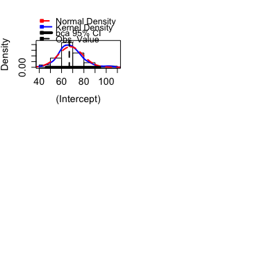
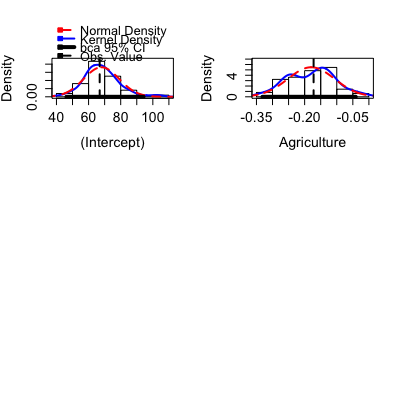
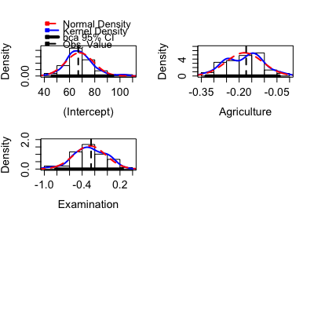
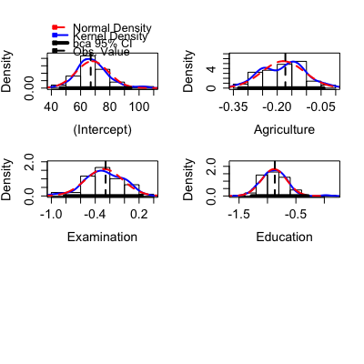
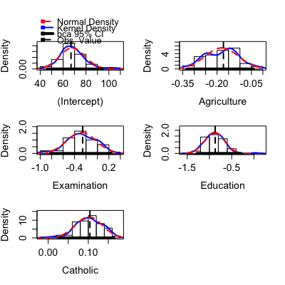
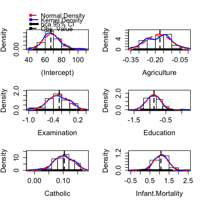

boot objects
hist(x, parm, layout = NULL, ask, main = "", freq = FALSE, estPoint = TRUE, point.col = "black", point.lty = 2, point.lwd = 2, estDensity = !freq, den.col = "blue", den.lty = 1, den.lwd = 2, estNormal = !freq, nor.col = "red", nor.lty = 2, nor.lwd = 2, ci = c("bca", "none", "percentile"), level = 0.95, legend = c("top", "none", "separate"), box = TRUE, ...) summary(object, parm, high.moments = FALSE, extremes = FALSE, ...) confint(object, parm, level = 0.95, type = c("bca", "norm", "basic", "perc", "all"), ...)
boot of class "boot".
c(1, 1) or c(4, 3), the layout
of the graph will have this many rows and columns. If not set, the program
will select an appropriate layout. If the number of graphs exceed nine, you
must select the layout yourself, or you will get a maximum of nine per page.
If layout=NA, the function does not set the layout and the user can
use the par function to control the layout, for example to have
plots from two models in the same graphics window.
TRUE, ask the user before drawing the next plot; if FALSE, don't
ask.
main="" for no title.
hist is freq=TRUE to give a frequency
histogram. The default here is freq=FALSE to give a density
histogram. A density estimate and/or a fitted normal density can be added
to the graph if freq=FALSE but not if freq=TRUE.
estPoint=TRUE, the default, a vertical line is drawn on the histgram
at the value of the point estimate computed from the complete data. The
remaining three optional arguments set the color, line type and line width
of the line that is drawn.
estDensity=TRUE andfreq=FALSE, the default, a kernel density estimate is drawn
on the plot with a call to the density function with no additional
arguments. The
remaining three optional arguments set the color, line type and line width
of the lines that are drawn.
estNormal=TRUE andfreq=FALSE, the default, a normal density
with mean and sd computed from the data is drawn on the plot. The
remaining three optional arguments set the color, line type and line width
of the lines that are drawn.
ci="bca" or using the percentile method if
ci="percentile". No interval is drawn if
ci="none". The default is "bca". The interval is indicated
by a thick horizontal line at y=0. For some bootstraps the BCa method is unavailable and another method should be used.
hist; for other methods this is included for compatibility with the generic method. For example, the argument
border=par()$bg in hist will draw the histogram transparently, leaving only
the density estimates.
confint, level can be
a vector; for example level=c(.68, .90, .95) will return the estimated
quantiles at c(.025, .05, .16, .84, .95, .975).
"percentile" method, which uses the function
quantile to return the appropriate quantiles for the confidence
limit specified, the default bca which uses the bias-corrected and accelerated
method presented by Efron and Tibshirani (1993, Chapter 14). For the
other types, see the documentation for boot.
The Boot function in car uses the boot function from the
boot package to do a straightforward case
or residual bootstrap for a regression object. These are generic functions to
summarize the results of the bootstrap.
hist is used for the side-effect of drawing an array of historgams of
each column of the first argument. summary returns a matrix of
summary statistics for each of the columns in the bootstrap object. The
confint method returns confidence intervals. Print method
Efron, B. and Tibsharini, R. (1993) An Introduction to the Bootstrap. New York: Chapman and Hall.
Fox, J. and Weisberg, S. (2011) An R Companion to Applied Regression, Second Edition. Sage.
Fox, J. and Weisberg, S. (2012) Bootstrapping, http://socserv.mcmaster.ca/jfox/Books/Companion/appendix/Appendix-Bootstrapping.pdf.
Weisberg, S. (2013) Applied Linear Regression, Fourth Edition, Wiley
m1 <- lm(Fertility ~ ., swiss) betahat.boot <- Boot(m1, R=99) # 99 bootstrap samples--too small to be useful summary(betahat.boot) # default summaryR original bootBias bootSE bootMed (Intercept) 99 66.915 1.07814 11.0234 67.549 Agriculture 99 -0.172 -0.00736 0.0727 -0.168 Examination 99 -0.258 -0.02084 0.2537 -0.293 Education 99 -0.871 -0.01330 0.2198 -0.883 Catholic 99 0.104 -0.00295 0.0335 0.102 Infant.Mortality 99 1.077 -0.00702 0.3794 1.093Bootstrap quantiles, type = bca 2.5 % 97.5 % (Intercept) 46.21289 94.20094 Agriculture -0.33142 -0.04092 Examination -0.81921 0.23904 Education -1.28015 -0.28556 Catholic 0.02686 0.16371 Infant.Mortality -0.05754 1.65749




